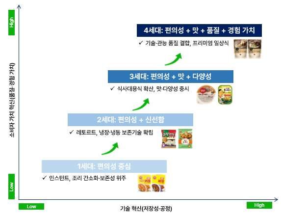
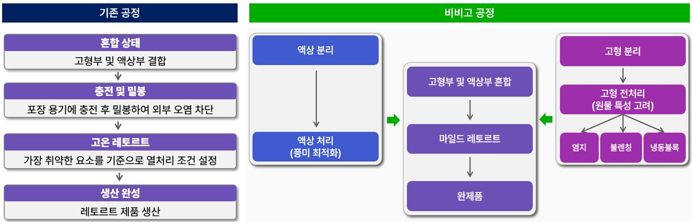
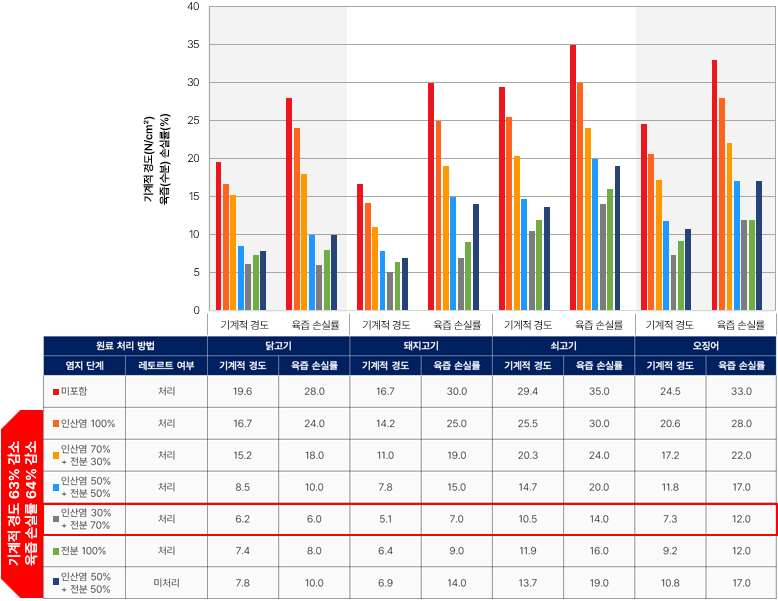
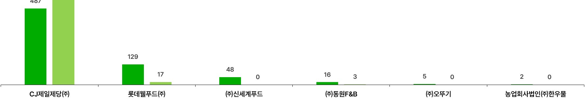

레토르트 기반 상온 가정간편식(HMR)은 상업적 멸균을 위한 고온·고압 열처리 탓에 맛·향·식감 등 관능적 품질이 저하되는 구조적 한계를 안고 있다. 본 사례연구는 CJ제일제당 비비고 국·탕·찌개류를 대상으로, 산업 전반에 고착된 저장성-관능적 품질 간 trade-off가 제품 아키텍처 재구성을 통해 어떻게 완화되는지를 분석한다. 비비고는 액상부와 고형부를 분리 가공한 뒤 재결합하는 방식으로 구성요소 간 연결 구조를 재설계해, 멸균 과정에서 각 요소에 가해지는 열처리 부담을 완화했다.
- 상온 간편식(HMR)은 상업적 멸균을 위한 고온 열처리 과정에서 맛·향·식감 등 관능적 품질이 저하되는 기술적 한계를 내재한다.
- 본 연구는 CJ제일제당 비비고 상온 HMR 사례를 통해 산업 전반에 고착된 구조적 제약이 제품 아키텍처 재구성을 통해 완화되는 과정을, Abernathy & Utterback(1978)의 산업 혁신 패턴·Stoneman(2010)의 소프트혁신·Henderson & Clark(1990)의 아키텍처 혁신을 단계적으로 연결한 틀로 분석한다.
- 비비고는 액상부와 고형부를 분리 가공한 뒤 재결합하는 방식으로 구성요소 간 연결 구조를 재설계함으로써 멸균 과정에서 각 요소에 가해지는 열처리 부담을 완화한 것으로 나타났다.
- 나아가 감각 속성을 공정 조건과 연계하여 설계함으로써 소비자 체감 품질을 향상시키는 소프트혁신을 구현하였다.
- 본 사례는 지배적 설계가 고착된 성숙 산업에서도 아키텍처 수준의 재구성으로 품질 상한선을 돌파할 수 있음을 실증하며, 공정 혁신과 소프트혁신의 결합이 지속적 경쟁 우위의 기반이 될 수 있음을 시사한다.
1. 서론
1.1 연구 배경 및 필요성
국내 즉석식품류 매출은 2015년 약 2.7조 원에서 2024년 약 8.4조 원으로 증가해 2015~2024년 연평균 약 13.8%의 성장률을 기록했고, 2024년 기준 HMR 제품군은 국내 식품산업 전체 매출의 9.2%를 차지하며 음료류에 이어 두 번째로 큰 단일 품목군을 형성했다. 이 가운데 레토르트 기반 상온 HMR은 냉동 유통망(cold chain) 없이도 장기 보존과 광역 유통이 가능하지만, 상온 보존을 가능하게 하는 고온·고압 열처리가 동시에 풍미 성분의 휘발, 단백질 변성, 조직감 붕괴를 유발한다. 그 결과 저장성(storage stability)과 관능적 품질(sensory quality) 사이의 구조적 trade-off가 발생한다.
문제의 본질은 개별 공정 조건의 최적화가 아니라 구성요소 간 관계 설정에 있다. 기존 레토르트 공정에서는 육류·채소·국물 등 서로 다른 물성을 가진 구성요소들이 단일 용기 안에 함께 밀봉되어 동일한 열이력(thermal history)을 부여받는다. 각 구성요소는 최적 열처리 조건이 다름에도, 전체 공정 조건은 가장 엄격한 살균 요건에 맞춰 설정된다. 이 과정에서 낮은 열처리로도 충분한 구성요소는 과처리되어 식감 저하·풍미 손실·조직감 붕괴가 발생한다.
1.2~1.3 분석 대상 선정과 연구 질문
연구는 CJ제일제당 비비고 국·탕·찌개류를 분석 대상으로 선정한다. 첫째 CJ제일제당은 2024년 기준 국내 HMR 제품군에서 가장 높은 판매액을 기록한 선도기업이며, 둘째 국·탕·찌개류는 고형부와 액상부가 한 용기에 공존하는 복합 식품 구조로 trade-off가 선명하게 드러나고, 셋째 분리 전처리·구성요소별 공정 조건 차별화·재결합 등 혁신 시도가 등록특허와 국제출원 문헌으로 추적 가능하다.
2. 이론적 배경 — 산업 맥락·혁신 목표·혁신 수단의 3단 연결
연구는 세 이론을 단계적으로 연결한다. Abernathy & Utterback(1978)의 산업 혁신 패턴은 산업 맥락을 설명하는 틀로, 산업이 유동기(fluid phase)를 지나 경화기(specific phase)에 진입하면 지배적 설계(dominant design)가 안정화되고 혁신의 초점이 공정 효율화와 점진적 개선으로 이동하며, 이때 관능적 품질은 독립적 혁신 목표가 아니라 주어진 기술적 제약 안에서 조정·관리되는 변수로 위치하게 됨을 보여준다. Stoneman(2010)의 소프트혁신(soft innovation)은 혁신 목표를 정의하는 틀로, 제품의 물리적 기능이 크게 변하지 않더라도 소비자가 지각하는 감각적·심미적 가치가 변화하면 이를 혁신으로 이해한다. Henderson & Clark(1990)의 아키텍처 혁신은 혁신 수단을 분석하는 틀로, 개별 구성요소의 핵심 설계는 유지하되 구성요소 간 연결 방식과 시스템 수준 설계가 재구성되는 혁신을 의미하며, 기존 기업에게 특히 어려운 이유를 조직 내에 암묵적으로 고착된 아키텍처 지식에서 찾는다.
비비고의 혁신은 기술적 가능성과 제도적 허용 조건이 맞물리는 지점에서 성립했다. 식품공전은 레토르트 식품 멸균 기준을 "제품의 중심온도 120℃ 이상에서 4분 이상 열처리하거나, 이와 동등 이상의 효력이 있는 방법"으로 규정하는데, 이 '동등 이상의 효력' 조항이 고정된 온도·시간 조건 외에 대안적 공정 설계의 여지를 제공한다.
3. 산업·기업 환경 분석
3.1 시장 구조: HMR 경쟁 기준의 변화
국내 HMR 시장은 편의성 중심의 1세대(인스턴트), 냉장·냉동 보존기술 기반의 2세대(신선함), 식사대용식 확산의 3세대(맛·다양성)를 거쳐, 기술적 안정성과 관능적 품질을 결합해 일상식에 가까운 경험 가치를 제공하는 4세대 프리미엄 HMR로 진화했다. 비비고 국·탕·찌개류는 상온 유통의 편의성을 유지하면서 가정식에 가까운 맛과 식감을 구현하고자 했다는 점에서 4세대의 대표적 사례다. 국·탕·찌개류는 국내 판매액이 2020년 3,017억 원에서 2024년 4,985억 원으로 증가해 품질 trade-off가 선명한 동시에 시장 성장성도 확인되는 제품군이다.

3.2~3.4 지배적 공정 구조와 CJ제일제당의 위치
국내 레토르트 식품 시장은 1981년 오뚜기 '3분 카레' 출시를 계기로 형성되었고, 지배적 설계로 기능한 것은 특정 제품이 아니라 식품을 밀봉한 뒤 고온·고압 조건에서 일괄 열처리하는 공정 구조였다. 기업들은 이 구조 내에서 원료 품질을 높이거나 조미 배합을 개선하는 방식으로 품질 향상을 시도했으나, 최종 멸균 과정에서 제품 전체가 동일한 열이력에 노출되는 한 개선 효과는 제한적이었다. CJ제일제당은 2024년 기준 전체 매출 17.9조 원을 기록한 종합식품기업으로, 햇반 70%, 캔햄 64%, 만두 45%의 점유율을 보유하고 국·탕·찌개류에서도 2018년 이후 약 39%의 점유율을 유지하고 있다.
4. 비비고의 혁신 메커니즘 분석
4.1 저장성-관능적 품질 Trade-off의 기술적 원인
trade-off의 원인은 개별 온도·시간 설정값 자체보다, 이질적 구성요소를 하나의 공정 구조 안에서 함께 처리하는 방식에 있다. 열처리 강도를 높이면 미생물 안전성과 저장성은 확보되지만 단백질 변성과 향 성분 손실로 관능적 품질이 저하되고, 강도를 낮추면 관능적 품질은 지키지만 상온 유통에 필요한 미생물 안전성을 충분히 보장하기 어렵다. 비비고 혁신의 핵심은 특정 균형점을 선택한 것이 아니라, 동일한 안전성 조건을 유지하면서도 소비자가 지각하는 맛·향·식감의 손상을 줄일 수 있도록 공정 구조 자체를 재설계한 데 있다.
4.2 공정 아키텍처 재구성
기존 공정은 액상부와 고형부를 결합한 상태에서 단일 열처리 조건을 적용했고, 전체 멸균 조건은 가장 열에 취약한 구성요소를 중심으로 설정되었다. 반면 비비고 공정은 액상부와 고형부를 분리 가공한 뒤 각각의 특성에 맞는 처리 조건을 적용하고 최종 단계에서 재결합하는 방식으로 공정 간 연결 구조를 재구성했다. 이는 개별 구성요소의 핵심 설계는 유지하되 구성요소 간 연결 방식을 변화시킨 아키텍처 혁신에 해당한다.

액상부 공정 전환: 기존 엑기스·분말 조미원료를 정제수에 혼합·가열하던 방식은 레토르트취의 원인 성분(2-Pentyl-Furan 등)이 높게 잔존했으나, 비비고는 원재료를 직접 가열·추출하고 온도 조건을 단계적으로 조절해 정미 성분 용출을 강화했다. 그 결과 글루타민은 기존 방식 4.3mg/L에서 비비고 방식 10.4mg/L로 증가했다. 육류 고형부 사전 안정화: 인산염 30%·전분 70% 염지 조건에서 기계적 경도가 약 63%, 육즙 손실률이 약 64% 감소했고, 여기에 표면 블랜칭을 병행하면 경도 약 73%, 육즙 손실률 약 76% 감소로 효과가 극대화되었다.

고형부 규격화: 야채·해산물 등 고형 원료를 전처리한 뒤 냉동블록 형태로 규격화해 투입함으로써 충진 과정의 품질 편차와 열처리 중 물성 변화를 완화하고, 자동 충진·정량 투입을 가능하게 했다. 멸균 열처리 강도 저감: 원재료에 마이크로파 가열을 적용해 사전 감균을 수행한 뒤 완화된 조건의 레토르트(마일드 레토르트)와 결합했다. 마이크로파 가열과 마일드 레토르트를 병행한 조건에서는 닭고기·쇠고기·새우 모두 총균·내열성균·진균이 검출되지 않아, 식품공전의 '동등 이상의 효력' 조건을 충족하면서 과도한 열처리에 따른 품질 저하를 완화했다.
4.3 소프트혁신의 구현 — 관능 속성의 정량화와 공정 변수 연동
비비고는 레토르트 공정에서 관능적 품질 저하를 불가피한 제약으로 수용하지 않고, 풍미·식감·후미·외관 같은 감각 속성을 온도·시간·pH·전처리 방식 등 구체적 공정 조건과 연동해 측정·비교·조정 가능한 대상으로 다루었다. pH 조정과 마일드 가열을 결합한 개선 공정 적용 후 김치원료의 전반맛·김치 식감·외관 평가값이 모두 상승했고, 돼지고기 김치찌개에서도 전반맛·김치 식감·돼지고기 씹힘 강도·외관이 개선되었다. 정미아미노산 함량·경도·관능평가 결과는 감각 품질을 수치화하고 공정 조건과 연결하는 근거로 활용되었다.
4.4 혁신 성과의 제도적 보호 — 특허 포트폴리오
비비고 론칭 이후인 2016년부터 2025년까지 CJ제일제당은 국내 487건, 해외 포함 총 1,111건의 식품 분야 특허를 출원해 롯데웰푸드·신세계푸드 등 경쟁사와 양적으로 큰 격차를 보였다. 특히 경쟁사들의 해외 출원이 제한적인 데 비해 CJ제일제당은 주요국 및 PCT 경로를 활용해 보호 범위를 확장하고 있다. 액상부 처리·고형부 안정화·냉동블록·마이크로파 전처리 같은 공정 요소가 특허로 권리화될수록 후발 기업은 동일한 공정 설계나 제품 구현을 모방하기 어려워진다.

5. 결론
- 연구 결과: 비비고는 액상부와 고형부를 분리 가공 후 재결합하는 방식으로 공정 간 연결 구조를 재구성해, 상업적 멸균 기준을 충족하면서도 조직감과 풍미 저하를 완화했다. 염지·블랜칭·냉동블록·마이크로파 전처리는 기존 식품가공 지식의 연장선이지만 '분리 가공 후 재결합'이라는 새로운 연결 규칙 아래 통합된 아키텍처 혁신이다.
- 공정혁신의 확장: 식품산업에서 공정혁신은 개별 공정의 효율 개선을 넘어 공정 간 연결 구조의 재설계로 확장될 필요가 있다. 개별 공정 최적화만으로 구조적 trade-off를 완화하기 어려운 경우, 구성요소 간 관계와 처리 순서를 재검토하는 아키텍처 재구성이 요구된다.
- 관능 품질의 설계화: 맛·향·식감·외관은 정성적 판단에 머무르기보다 공정 조건과 관능평가 데이터를 연계해 반복적으로 설계·검증하는 정량적 품질 목표로 관리되어야 하며, 이것이 소프트혁신을 재현·확장 가능한 체계로 전환하는 기반이다.
- 지식재산 결합과 한계: 공정혁신·소프트혁신은 특허 포트폴리오로 권리화될 때 모방 가능성을 낮추고 지속 가능한 경쟁우위로 이어진다. 다만 본 연구는 2차 자료 기반 단일 사례연구로, 기업 내부 의사결정 과정 확인과 일반화에 한계가 있어 다중 사례연구가 향후 과제로 남는다.